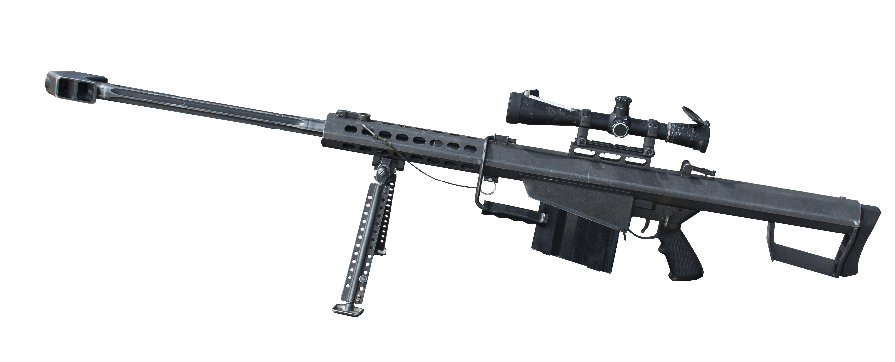

Daftar Senapan Runduk Modern
Senapan Runduk Buatan Indonesia
1. Pindad SPR-2
- Kaliber: 12,7×99mm NATO (.50 BMG)
- Panjang: 1.745 mm
- Berat: 19,5 kg
- Jarak efektif: hingga 2.000 meter
- Tipe: Bolt-action
Keterangan: Senapan anti-materiel jarak jauh buatan dalam negeri oleh PT Pindad.
Senapan Runduk Buatan Amerika Serikat
1. Barrett M82
- Kaliber: .50 BMG (12,7×99mm NATO)
- Panjang: 1.448 mm
- Berat: 14 kg
- Jarak efektif: hingga 1.800 meter
- Tipe: Semi-automatic
Keterangan: Senapan runduk anti-materiel legendaris yang digunakan oleh militer AS dan NATO.
2. CheyTac M200 Intervention

- Kaliber: .408 CheyTac
- Panjang: 1.400 mm
- Berat: 12,1 kg
- Jarak efektif: hingga 2.300 meter
- Tipe: Bolt-action
Keterangan: Dirancang untuk akurasi tinggi pada jarak ekstrem, dikenal dari film dan video game.
3. McMillan TAC-50
- Kaliber: .50 BMG
- Panjang: 1.448 mm
- Berat: 11,8 kg
- Jarak efektif: hingga 2.200 meter
- Tipe: Bolt-action
Keterangan: Memegang rekor tembakan terjauh yang berhasil membunuh target.
Senapan Runduk Buatan UK
Accuracy International AXMC
- Jenis: Bolt-action Sniper Rifle
- Kaliber: 338 Lapua Magnum / .300 Win Mag / .308 Win
- Panjang: 1.150 mm
- Berat: 6,8 kg
- Jarak efektif: 1.500 - 1.700 meter
- Tipe: Bolt-action
Spesial: Modular, bisa diganti-ganti kalibernya.
Senapan Runduk Buatan Inggris
L115A3
- Kaliber: .338 Lapua Magnum
- Panjang: 1.300 mm
- Berat: 6,8 kg
- Jarak efektif: hingga 1.500 meter
- Tipe: Bolt-action
Keterangan: Digunakan oleh pasukan khusus Inggris, termasuk SAS.
Senapan Runduk Buatan Prancis
PGM Hecate II
- Kaliber: .50 BMG
- Panjang: 1.380 mm
- Berat: 13,8 kg
- Jarak efektif: hingga 1.800 meter
- Tipe: Bolt-action
Keterangan: Dirancang untuk menghancurkan peralatan berat dan kendaraan lapis baja ringan.
Senapan Runduk Buatan Jerman
PSG 1

- Jenis: Semi-auto Sniper Rifle
- Kaliber: 7.62x51mm NATO
- Panjang: 1.208 mm
- Berat: 8,1 kg
- Jarak efektif: hingga 800 meter
- Tipe: Semi-automatic
Spesial: Sangat akurat, banyak digunakan oleh unit anti teror.
Senapan Runduk Buatan Tiongkok
QBU-88
- Kaliber: 5,8x42mm DBP87
- Panjang: 920 mm
- Berat: 4,1 kg
- Jarak efektif: hingga 800 meter
- Tipe: Semi-automatic
Keterangan: Digunakan oleh tentara Pembebasan Rakyat Tiongkok.
Senapan Runduk Buatan Austria
Steyr HS.50
- Kaliber: .50 BMG
- Panjang: 1.370 mm
- Berat: 12,4 kg
- Jarak efektif: hingga 1.500 meter
- Tipe: Bolt-action
Keterangan: Digunakan oleh berbagai pasukan militer di seluruh dunia.
Senapan Runduk Buatan Rusia
SV-98
- Kaliber: 7,62x54mmR
- Panjang: 1.200 mm
- Berat: 5,4 kg
- Jarak efektif: hingga 1000 meter
- Tipe: Bolt-action
Keterangan: Digunakan oleh militer Rusia untuk penembakan jarak jauh dengan akurasi tinggi.
Senapan Runduk Buatan Rusia
SVD Dragunov
- Jenis: Designated Marksman Rifle (DMR)
- Kaliber: 7,62x54mmR
- Panjang: 1.225 mm
- Berat: 4,3 kg
- Jarak efektif: 800 - 1000 meter
- Tipe: Semi-automatic
Spesial: Digunakan luas oleh negara-negara Blok Timur sejak era Perang Dingin.